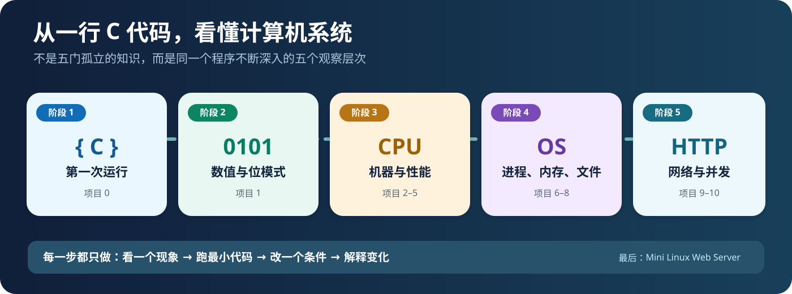

STEP 01 · 第一件事
让 C 程序真正运行起来

写 hello.c→gcc 编译→./hello 运行
第一次只需要分清三件事：写下程序、编译生成文件、运行才出现输出。不要求你先看懂汇编、进程和 ELF。
这里不是要你一次学完所有文档。我们只沿着一条线索前进：一段 C 代码如何变成机器指令，在 CPU、内存、操作系统和网络的共同作用下运行。
第一次只需要分清三件事：写下程序、编译生成文件、运行才出现输出。不要求你先看懂汇编、进程和 ELF。

下面按阶段折叠收纳全部 11 个最小实验。现在只展开阶段 1；其他阶段用到时再点开。每张卡片先做微实验，再决定要不要读长文档。
你的第一个问题：11111111 为什么可以是 255，也可以是 -1？
从一次函数加法开始，再逐步观察 CPU 的状态变化、多个文件链接和内存访问顺序。
先看 fork 创造的两条执行路线，再观察指针的虚拟地址，以及如何把信息写入文件。
先在本机看到一个 HTTP 响应，再观察两个线程如何等待，最终才写完整 Web Server。
你并不需要提前学会使用全部工具。以下只是按问题分类的“工具箱”。
本页面默认建议从项目 0 开始，是课程入口，不代表你此前项目没有完成。实际学习进度仍以你亲手运行、预测和解释的证据为准。